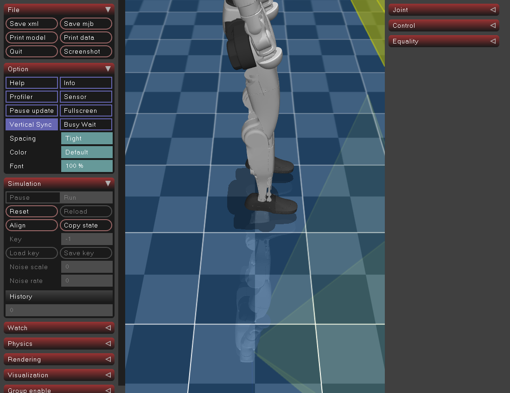
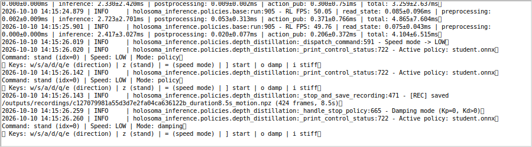
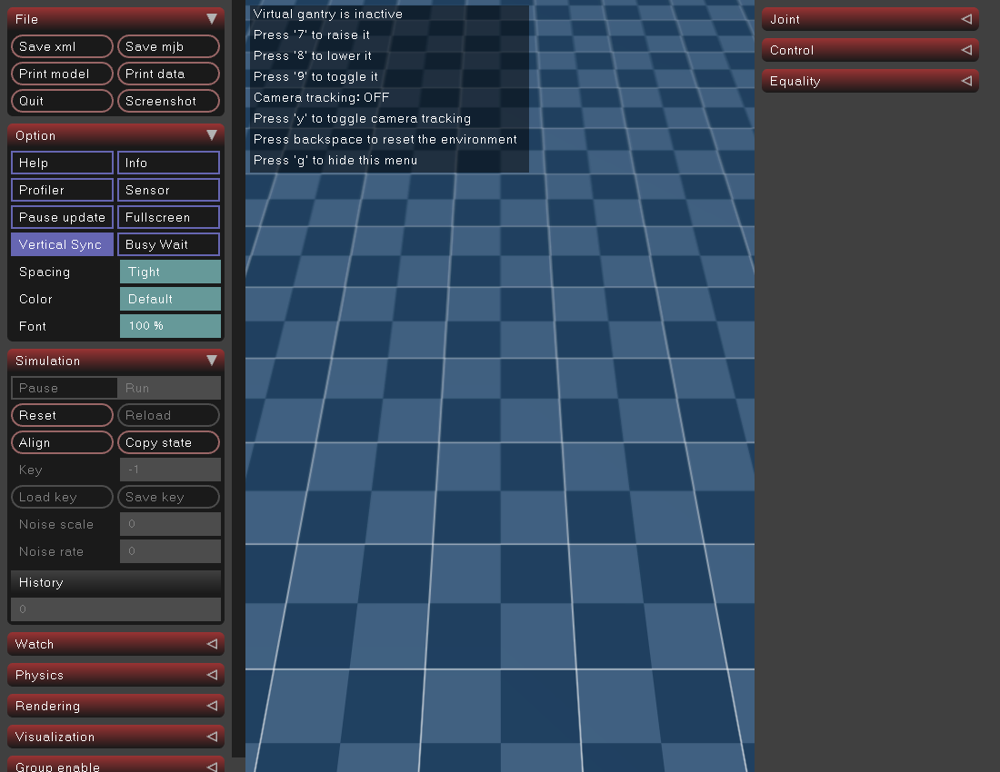
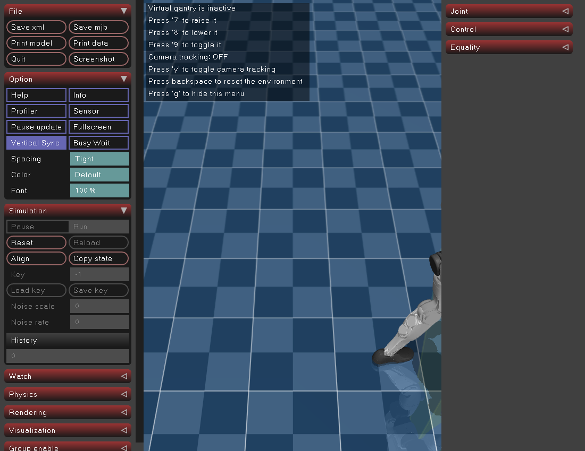
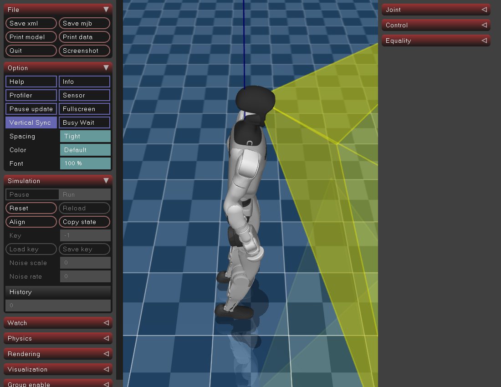

全方向键与 Backspace：真实平地接口补验
原始媒体、无重编码。单个G1接口运行；不代表障碍通关或实机成功。1段视频、1份424帧录制，两个原生worker正常返回。
范围/恢复说明 · 验收数据 · 原始键事件 · SHA
本次原始离屏视频；原始全片解码0。画面与模拟时间不能证明实时性能或技能质量。
原始可见MuJoCo窗口初态。
独占终端原始日志；真实键事件另见原始JSONL。 原始Backspace前窗口画面。
原始Backspace前窗口画面。
原始Backspace后窗口画面；物理重置的定量依据是原render前后time/qpos/qvel/ctrl。
低速键批次原始截图，仅表示当时相机视图，不把画面当方向标签或步态成功。 高速键批次原始截图，仅表示当时相机视图，不把画面当方向标签或步态成功。
高速键批次原始截图，仅表示当时相机视图，不把画面当方向标签或步态成功。
7/y/g控制后恢复观察状态的原始截图。